7 ÁREAS DE ESPECIALIDAD TÉCNICA
Haz clic sobre cada área para desplegar u ocultar el detalle de servicios técnicos, normativas y registros fotográficos en campo.
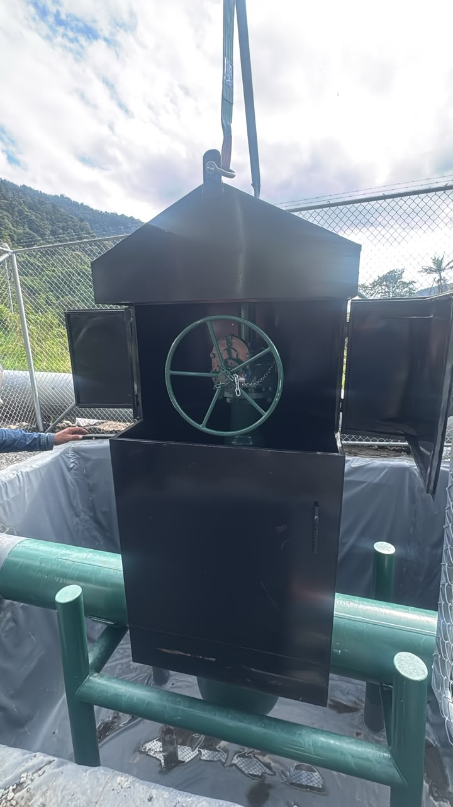
AMPLIAR FOTO ⤢Ingeniería Básica y de Detalle
Cálculo de esfuerzos, dimensionamiento de líneas de flujo, elaboración de planos isométricos y especificaciones técnicas de materiales para tuberías de acero al carbono e inoxidable.
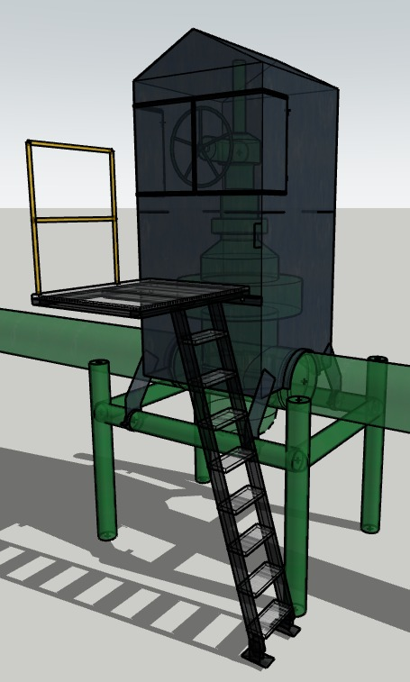
AMPLIAR FOTO ⤢Diseño y Modelado 3D
Modelado CAD 3D de plantas y sistemas de piping, detección de interferencias en locación, maqueta digital y generación de planos de construcción As-Built certificados.
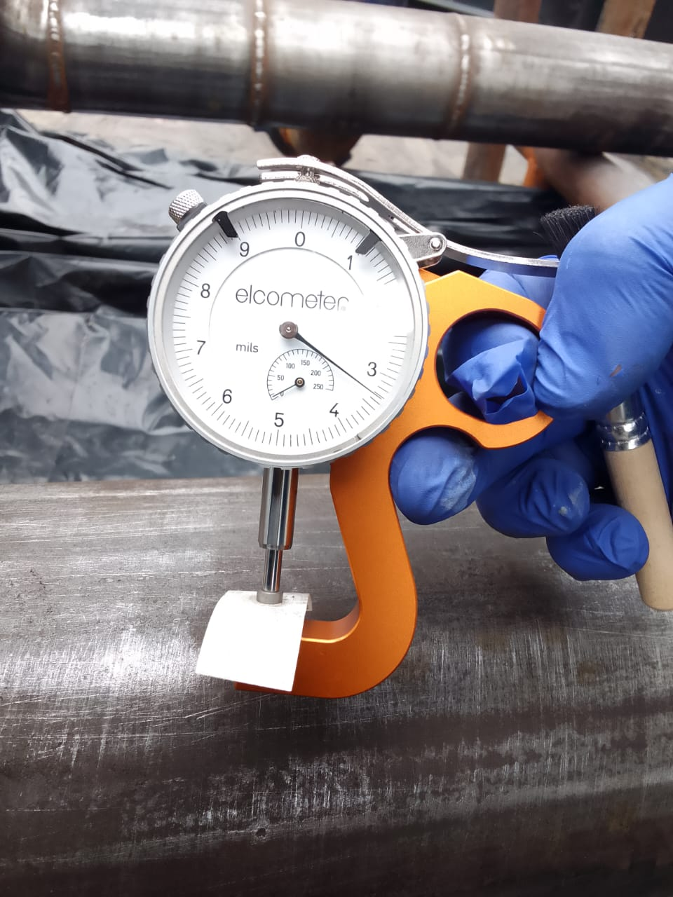
AMPLIAR FOTO ⤢Gestión de Integridad Mecánica
Programas de inspección basada en riesgo (RBI), medición de espesores remanentes, cálculo de vida útil para recipientes y tuberías bajo normativas API 510, 570 y 653.
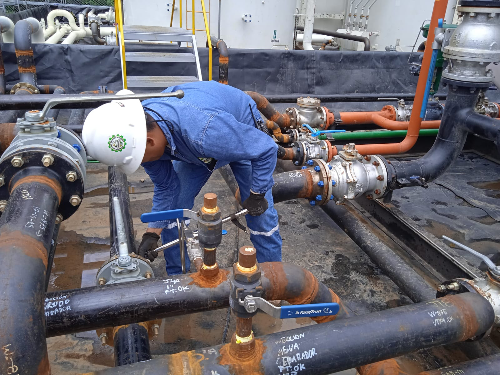
AMPLIAR FOTO ⤢Auditorías Operativas Metalmecánicas
Evaluación técnica de procesos de soldeo, verificación de WPS/PQR, control de coladas y auditorías de aseguramiento de calidad (QA/QC) en taller y campo.
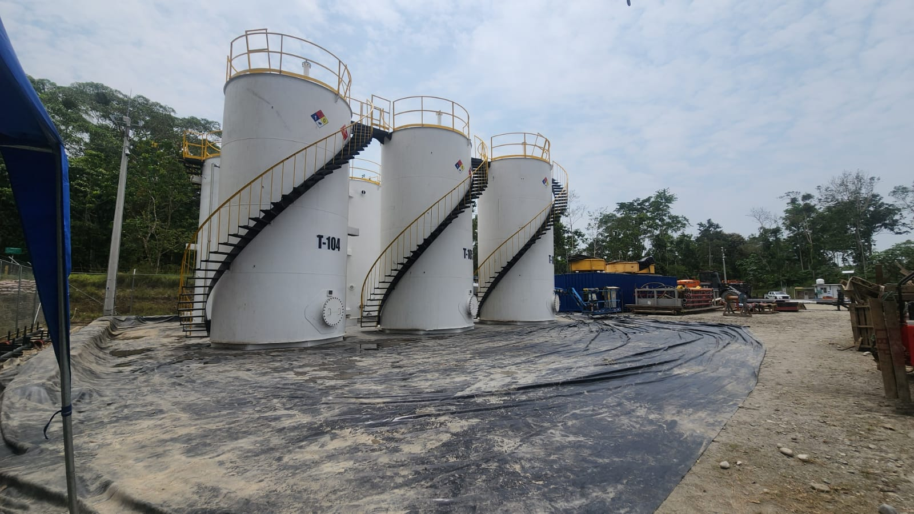
AMPLIAR FOTO ⤢Tanques de Almacenamiento
Fabricación, armado y montaje en campo bajo normas API 650 y API 653 para almacenamiento de crudo, condensados, agua de formación y combustibles.
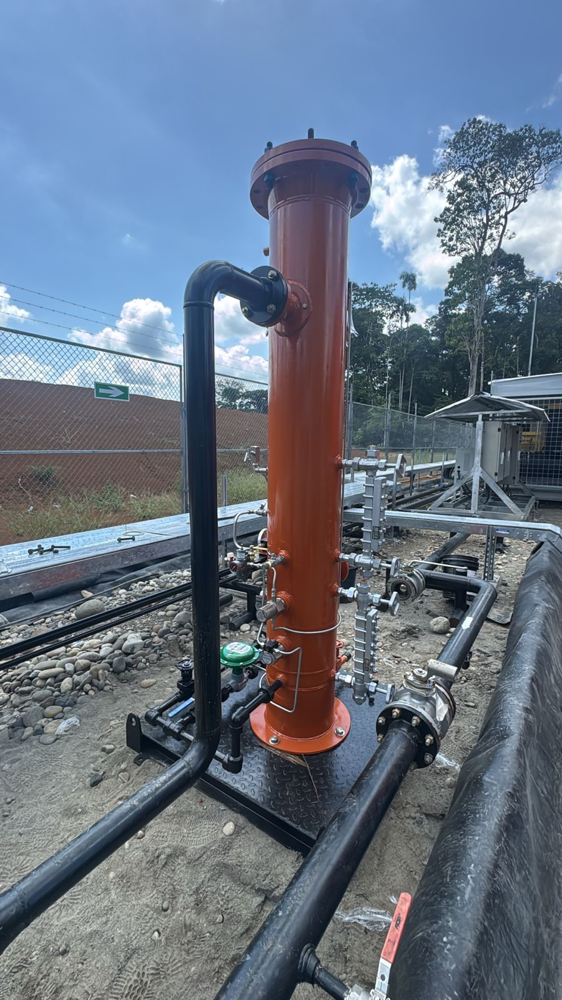
AMPLIAR FOTO ⤢Scrubbers & K.O. Drums
Fabricación de depuradores de gas y tambores Knock-Out de alta presión para separación de fases y protección de compresores en estaciones de flujo.
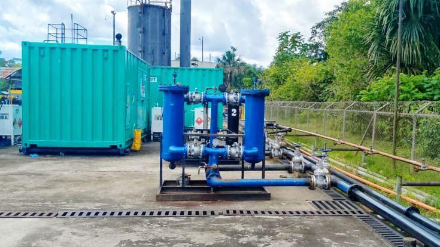
AMPLIAR FOTO ⤢Filtros Coalescentes & Separadores
Unidades de filtración de alta eficiencia para separación de agua/hidrocarburos y acondicionamiento de gas combustible para motogeneradores.
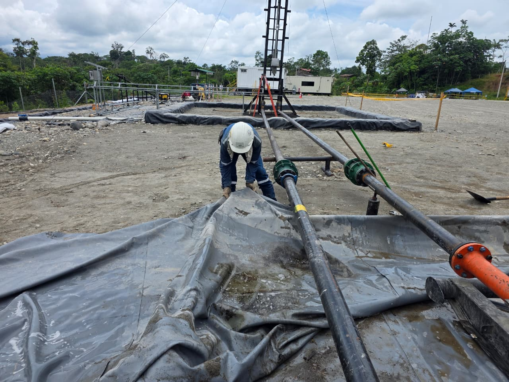
AMPLIAR FOTO ⤢Teas y Antorchas de Combustión
Fabricación y montaje de estructuras verticales de desfogue (flares), cabezales de combustión de gas, líneas de ignición y sistemas de alivio.
 AMPLIAR FOTO ⤢
AMPLIAR FOTO ⤢
Skids Mecánicos Modulares
Montaje de paquetes integrados sobre patín estructural: unidades de bombeo, inyección química, sistemas de medición y colectores de proceso.
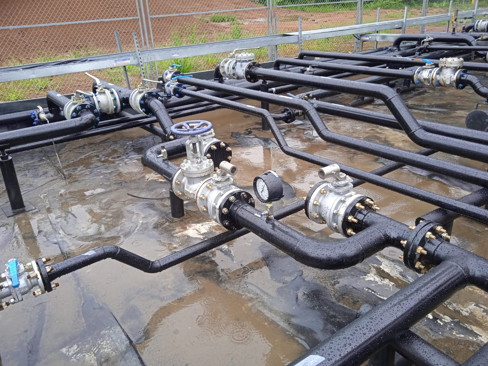
AMPLIAR FOTO ⤢Manifolds & Botas de Gas
Distribuidores de flujo de alta presión en diámetros de 8", 10", 12" y superiores, con boquillas weldolet, válvulas bridadas y derivaciones de pozo.
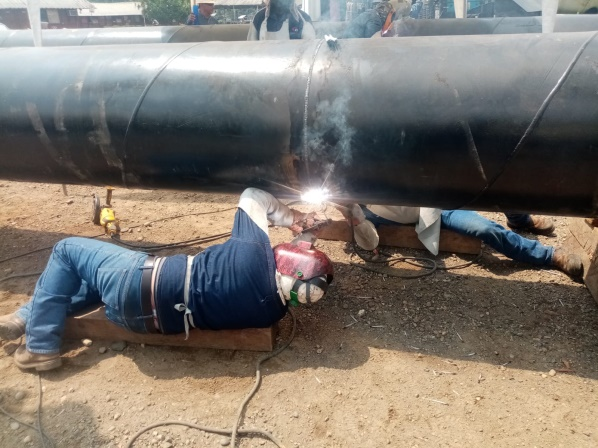
AMPLIAR FOTO ⤢Soldadura de Tubería Calificada
Soldadores calificados (WPQ) en procesos SMAW (electrodos celulósicos y bajo hidrógeno con termo portátil), GTAW/TIG y FCAW para tuberías en aceros grado B, X56, X70 y X80.
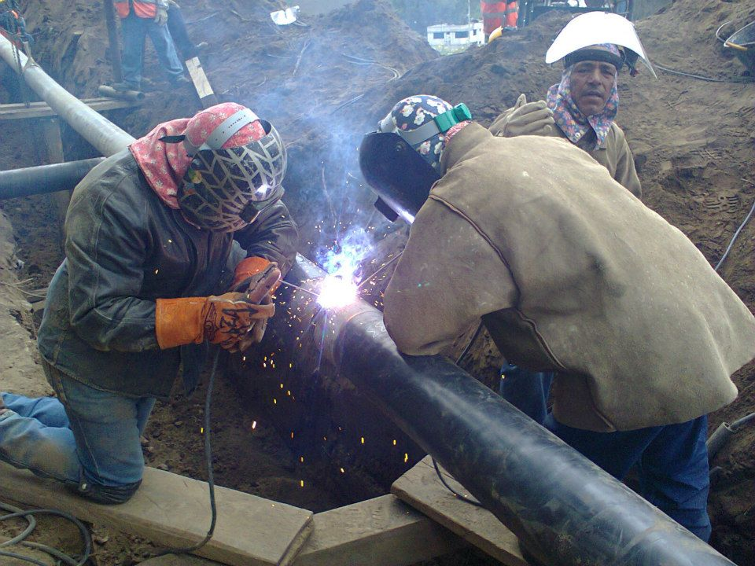
AMPLIAR FOTO ⤢Soldadura de Tubería Enterrada
Ejecución especializada de soldadura a tope en zanjas para líneas de flujo (flowlines), cruces viales y redes de transporte con rigurosa preparación y alineación.
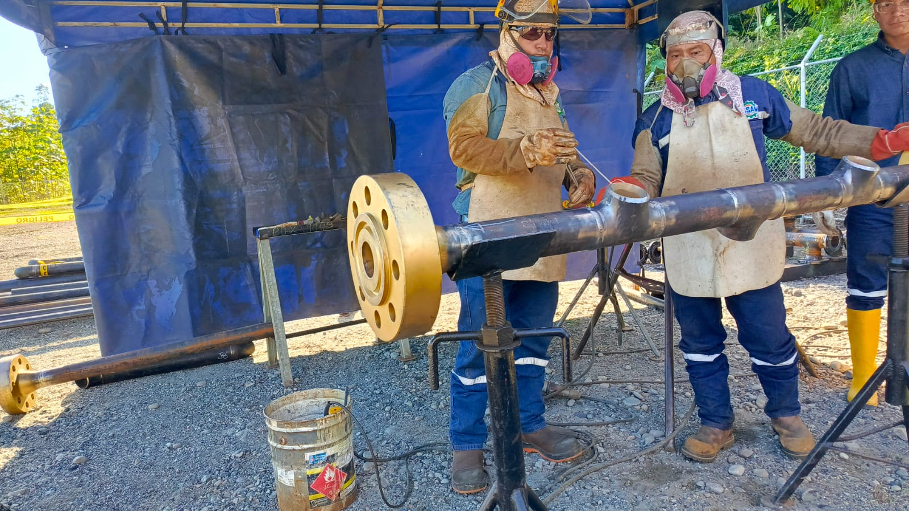
AMPLIAR FOTO ⤢Prefabricado de Spools de Tubería
Fabricación en taller bajo carpas de campo con control dimensional milimétrico, uso de grampas de alineación exterior y ajuste perfecto de bridas.
 AMPLIAR FOTO ⤢
AMPLIAR FOTO ⤢
Soldadura Estructural Calificada
Fabricación de vigas, pórticos, racks de tubería, soportes H y puentes metálicos vehiculares y peatonales bajo especificación AWS D1.1.
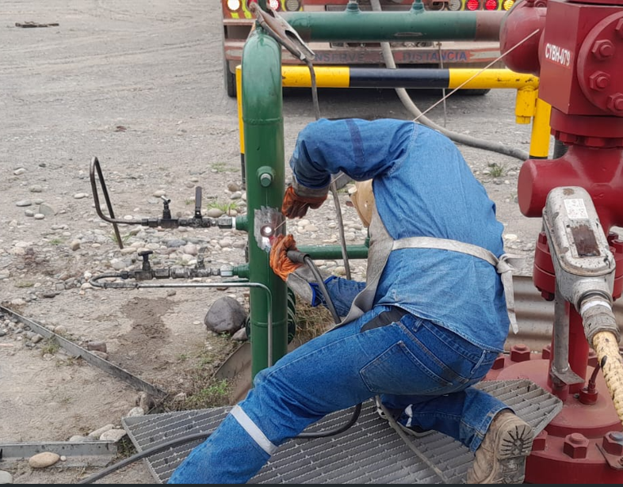
AMPLIAR FOTO ⤢Trabajos de Hot Tapping (En Caliente)
Intervenciones en caliente bajo procedimiento ASSAM-PR-OPE-013 para soldadura de split tees y perforación controlada en líneas en servicio sin parada de planta.
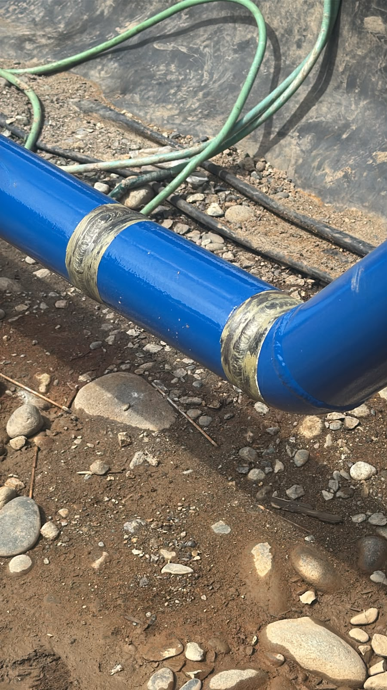
AMPLIAR FOTO ⤢Trazabilidad de Consumibles
Control estricto de temperatura entre pases, mantenimiento de electrodos en hornos portátiles y registro de junta soldada en planos As-Built.
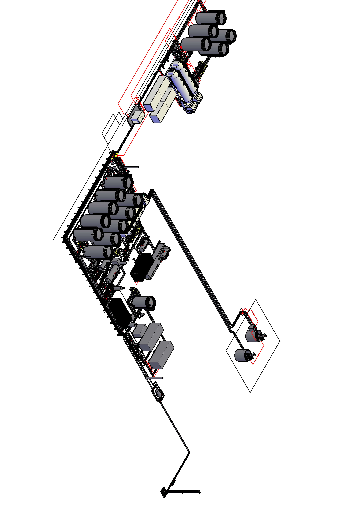
AMPLIAR FOTO ⤢Facilidades Tempranas (EPF)
Construcción modular e interconexión mecánica para puesta en producción inmediata de pozos exploratorios y de desarrollo (Fases 1, 2 y 3).
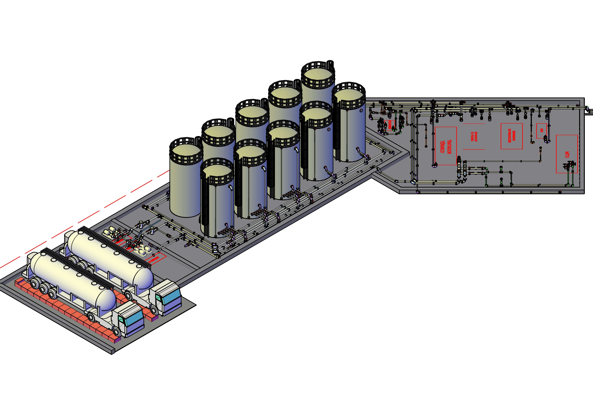
AMPLIAR FOTO ⤢Facilidades de Producción
Montaje de estaciones permanentes de recolección, separación de crudo/gas/agua, manifolds de cabezal y baterías de tanques API.
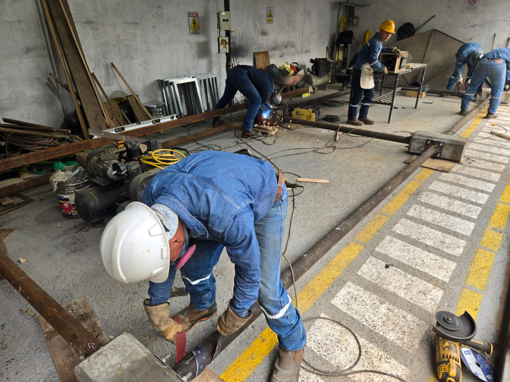
AMPLIAR FOTO ⤢Construcción y Mantenimiento de Oleoductos
Tendido de líneas de flujo (flowlines), reemplazo de tramos de oleoductos de 6", 8", 10", 20" y 24", pruebas de hermeticidad y enterramiento.
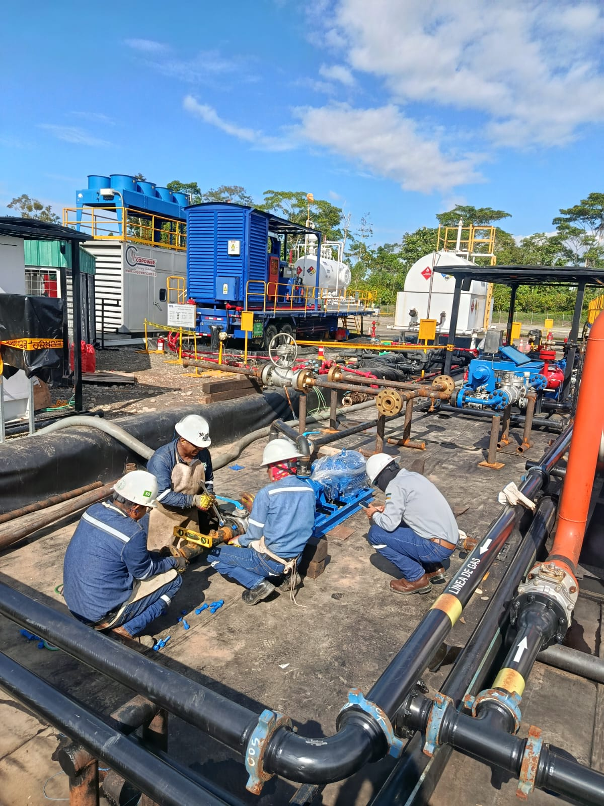
AMPLIAR FOTO ⤢Montajes Electromecánicos de Skids
Montaje y nivelación con instrumentos de precisión de unidades de bombeo, compresores de gas, unidades motrices Copower y generadores.
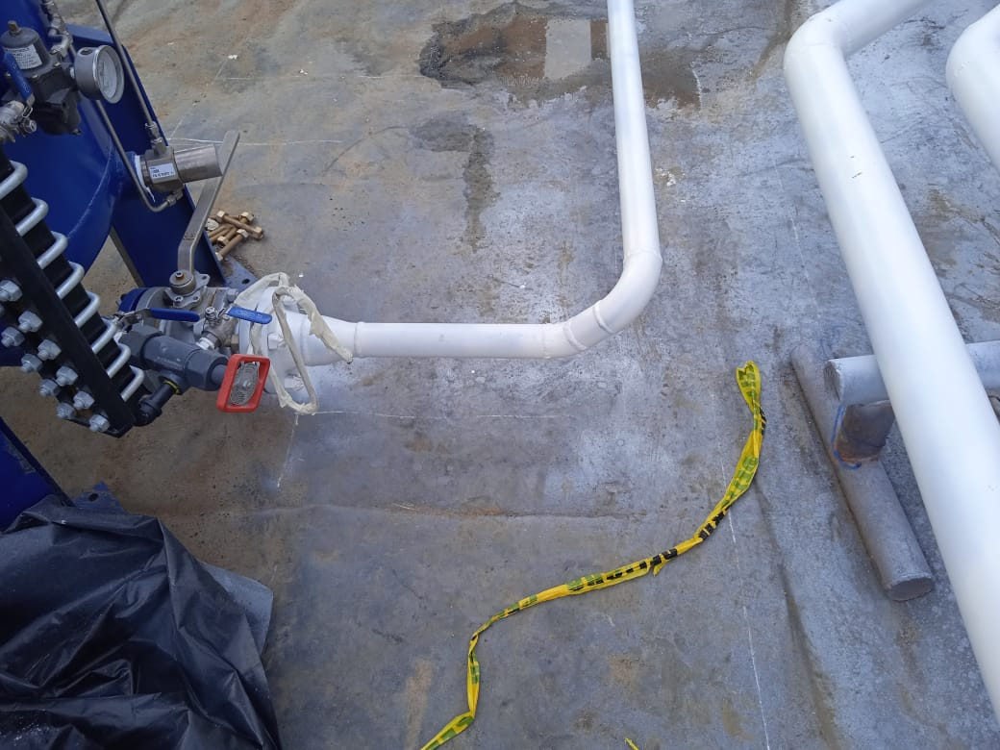
AMPLIAR FOTO ⤢Interconexiones Mecánicas (Tie-Ins)
Empalmes y adecuaciones de líneas existentes a nuevas facilidades de producción con mínima afectación operacional.
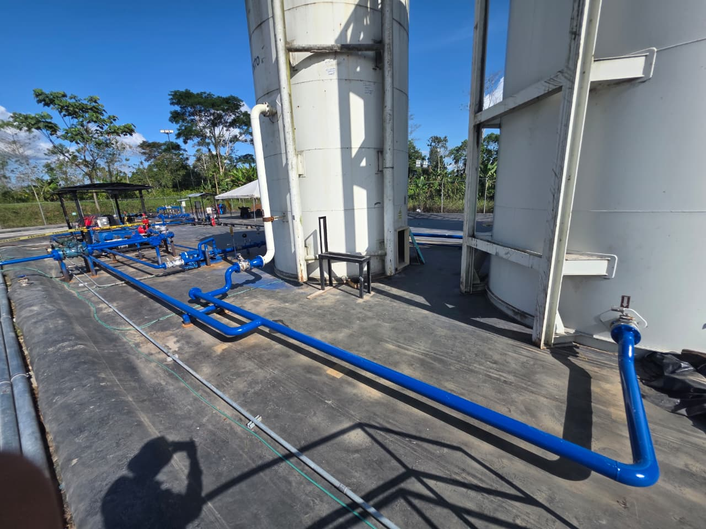
AMPLIAR FOTO ⤢Redes de Piping de Proceso
Instalación de circuitos completos de tubería de succión, descarga, drenajes cerrados/abiertos y colectores generales.
 AMPLIAR FOTO ⤢
AMPLIAR FOTO ⤢
Ensayos No Destructivos (END)
Inspección por Tintas Penetrantes (PT), Partículas Magnéticas (MT), Ultrasonido (UT) y Visual (VT) bajo ASME V por inspectores Nivel II.
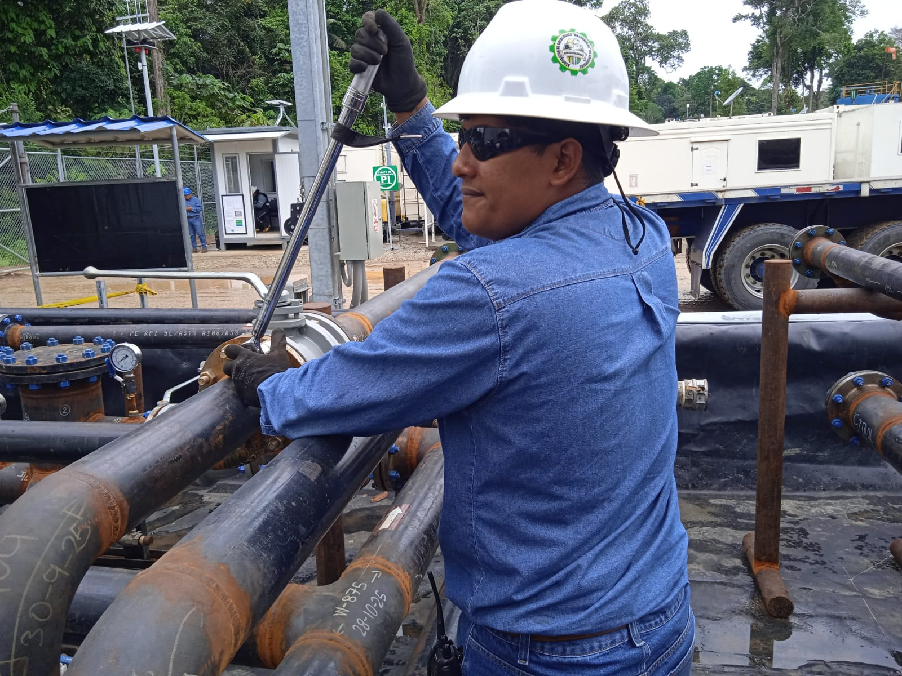
AMPLIAR FOTO ⤢Torqueo Controlado de Bridas
Ajuste secuencial de espárragos con torquímetros calibrados según ASME PCC-1, garantizando sello hermético libre de fugas.
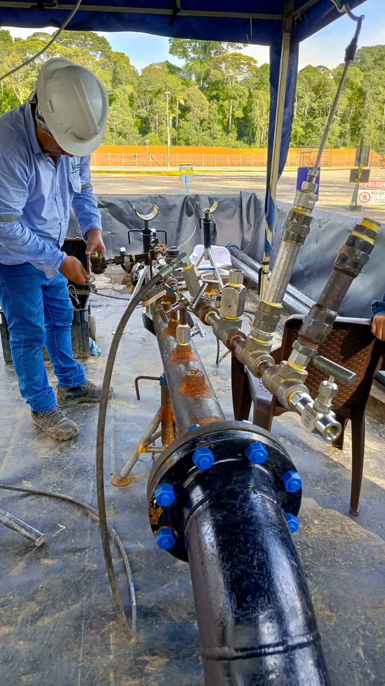
AMPLIAR FOTO ⤢Pruebas Hidrostáticas y Neumáticas
Presurización controlada con registro gráfico mediante manógrafo Barton calibrado, manifold de prueba y alivio según ASME B31.3 / B31.4.
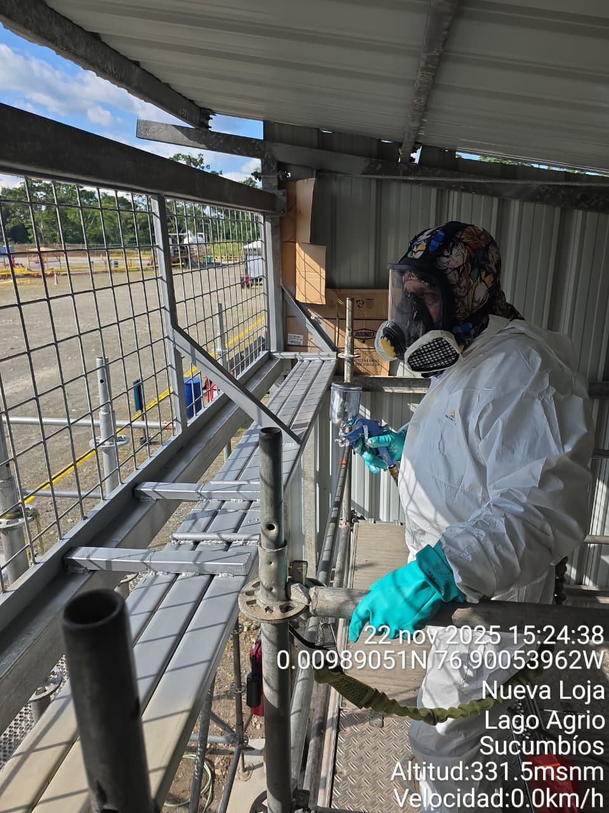
AMPLIAR FOTO ⤢Sandblasting y Pintura Industrial
Preparación de superficie con chorro abrasivo a metal blanco (SSPC-SP 10) y aplicación de sistemas epóxicos y poliuretano bajo norma NACE/SSPC.
 AMPLIAR FOTO ⤢
AMPLIAR FOTO ⤢
Medición de Espesores y Rugosidad
Ensayos de rugosidad con cinta réplica y micrómetro Elcometer; medición de espesores remanentes por ultrasonido en recipientes y tuberías.
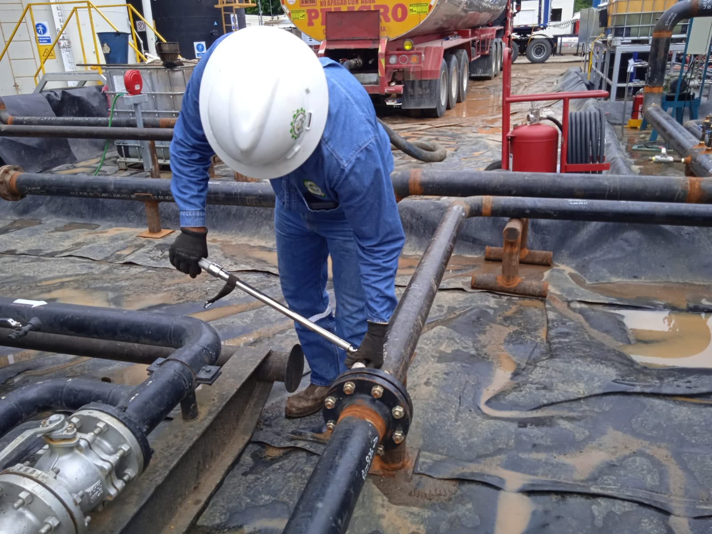
AMPLIAR FOTO ⤢Mantenimiento Mecánico de Válvulas y Equipos
Desmontaje, asentamiento de sellos, cambio de empaquetaduras, reemplazo de vástagos y pruebas en banco de válvulas de compuerta, retención y seguridad.
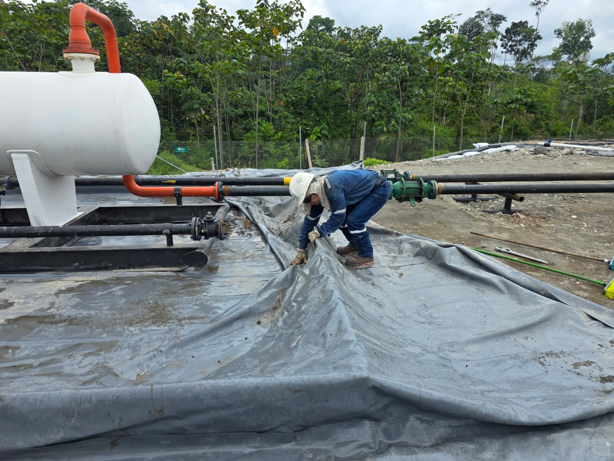
AMPLIAR FOTO ⤢Construcción y Mantenimiento de Cubetos de Contención
Construcción y mantenimiento de cubetos de contención secundaria permanentes o temporales, diques de hormigón armado, y tendido, traslape y termosellado de liner y geomembrana HDPE para retención de derrames en áreas de tanques y piscinas.
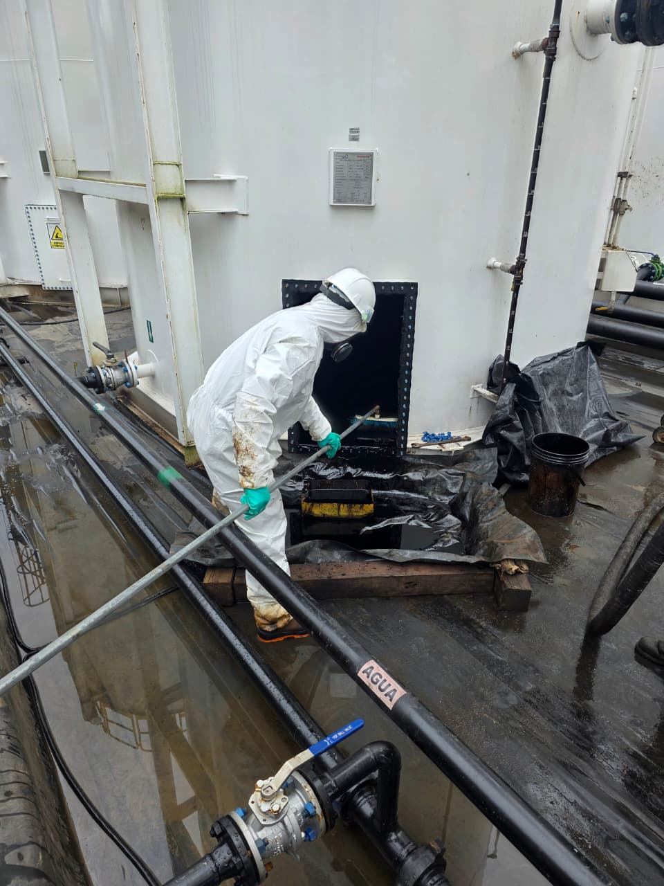
AMPLIAR FOTO ⤢Mantenimiento, Reacondicionado y Lavado de Vasijas y Equipos
Mantenimiento preventivo y correctivo, lavado técnico interno/externo con vapor y desengrasantes, desgasificación, retiro de lodos, reacondicionado mecánico, cambio de empaquetaduras y adecuación de vasijas, scrubbers y equipos de proceso.
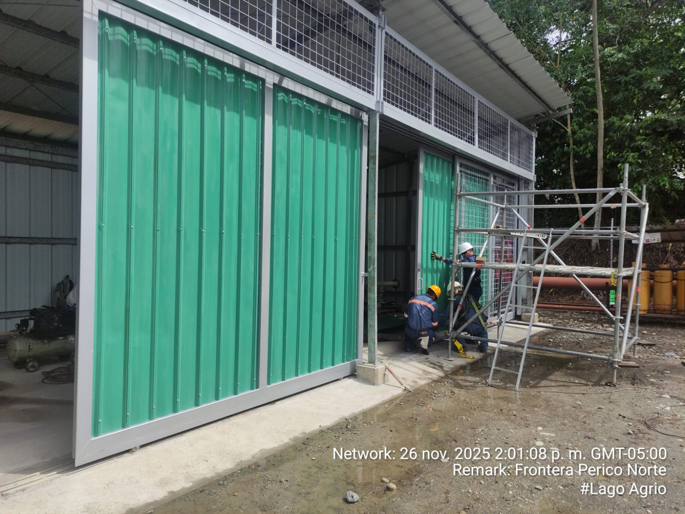
AMPLIAR FOTO ⤢Losas y Bases de Concreto
Fundición de losas reforzadas para generadores, skids de compresión, transformadores y equipos con anclajes estructurales.
 AMPLIAR FOTO ⤢
AMPLIAR FOTO ⤢
Cerramientos Perimetrales y Garitas
Instalación de cerramientos de malla ciclónica, portones industriales de acceso y fabricación de garitas transportables blindadas.
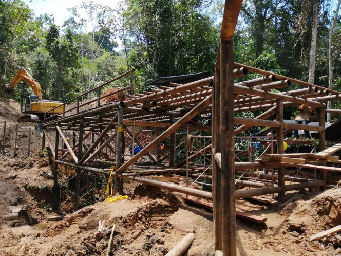
AMPLIAR FOTO ⤢Reforzamiento de Puentes y Taludes
Reparación y refuerzo estructural de puentes vehiculares y peatonales, entibados y pantallas de protección de taludes viales.
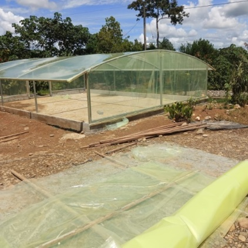
AMPLIAR FOTO ⤢Marquesinas e Infraestructura Agroindustrial
Construcción de cubiertas de galvalumen, marquesinas de secado de café y cacao y estructuras de soporte comunitario.
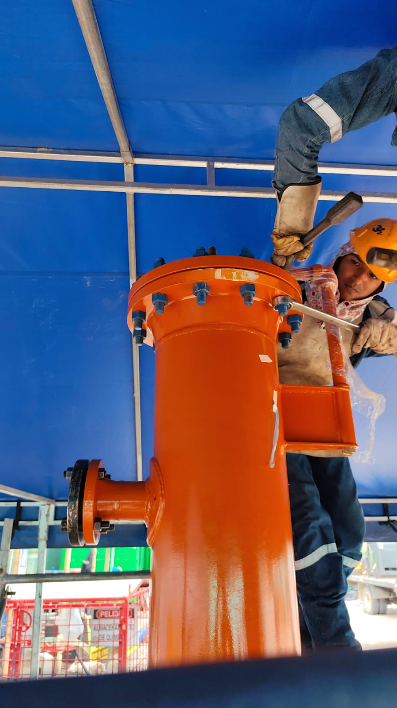
AMPLIAR FOTO ⤢Instalaciones Eléctricas de Baja Tensión
Canalizaciones con tubería conduit a prueba de explosión, tendido de cables de potencia, tableros de distribución y sistemas de puesta a tierra.
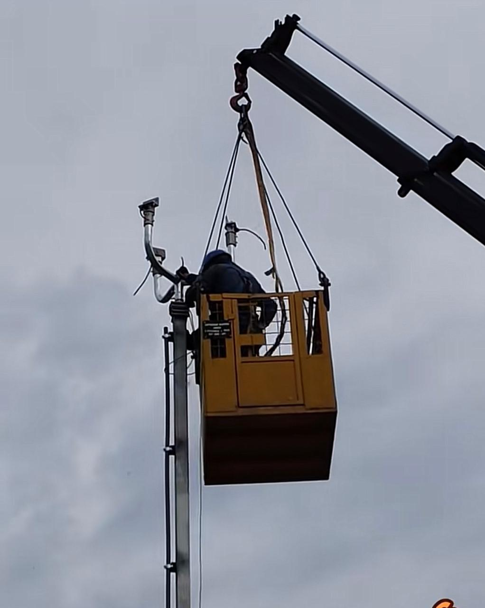
AMPLIAR FOTO ⤢Iluminación y Alarmas Industriales
Instalación de luminarias LED antideflagrantes para áreas clasificadas (Clase 1, Div 1/2) y conexionado de sirenas de emergencia.
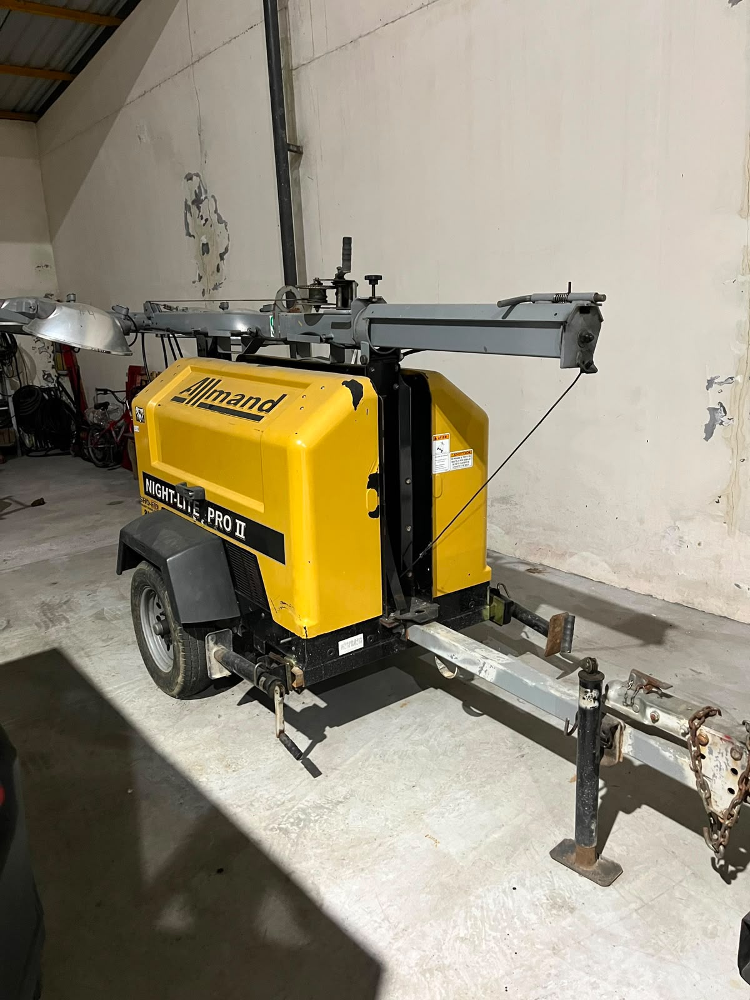
AMPLIAR FOTO ⤢Torres de Iluminación Móvil
Alquiler y operación de torres de iluminación Allmand Night-Lite Pro II y plantas autónomas para faenas nocturnas continuas de soldadura y montaje.
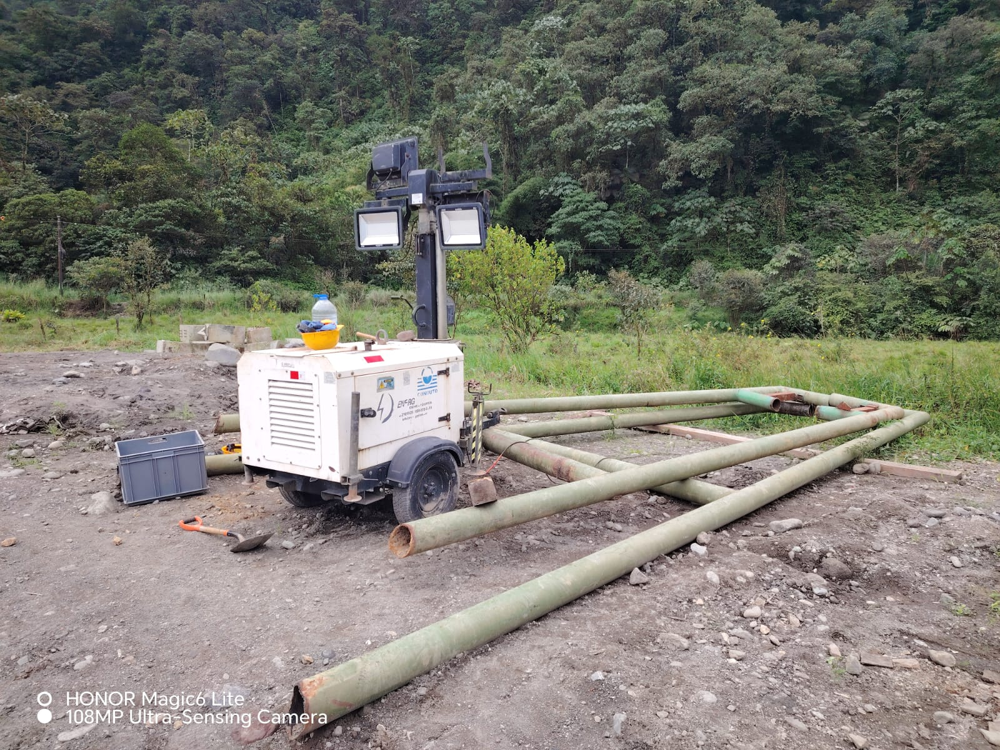
AMPLIAR FOTO ⤢Mantenimiento de Sistemas HVAC
Mantenimiento preventivo y correctivo de aires acondicionados y climatización para salas de control y casetas de operadores.
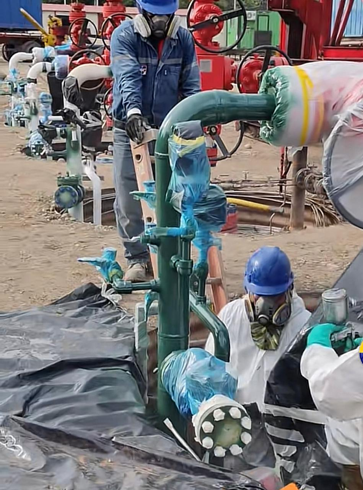
AMPLIAR FOTO ⤢Montaje de Mástiles de Comunicación
Instalación con canastilla en altura de postes y mástiles para antenas, cámaras de circuito cerrado (CCTV) y sirenas comunitarias.